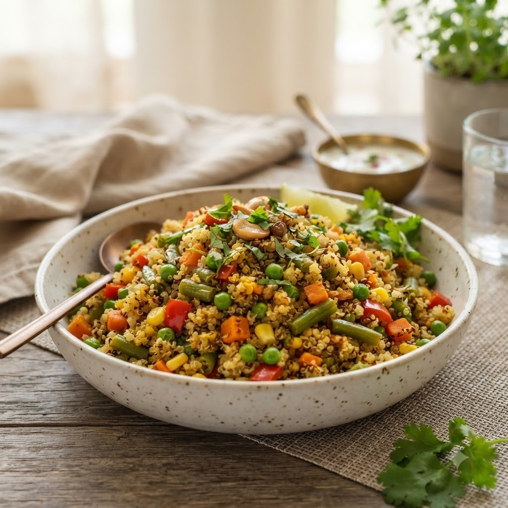

Vegetable Quinoa Pulao

Vegetable Quinoa Pulao
Chef Magic – Sauté + Boil Auto 21 min — Serves 3
Gluten-Free • High-Protein • Vegan • Healthy
🧑🍳 Chef Magic🍽 Serves 3
Prep ahead: Rinse quinoa well under running water until the water runs clear, to remove its natural bitterness.
Ingredients
- 1 cup quinoa, rinsed
- 1 cup mixed vegetables, chopped
- 1 small onion, chopped
- 1 tsp cumin seeds (jeera)
- 1 tbsp oil
- 1.75 cups water
- Salt to taste
Method
1Add oil and cumin seeds to the jar; select Sauté (Speed 2–4, ~130–160°C) until fragrant.
2Add onion and vegetables; sauté 4 minutes.
3Add quinoa, water and salt; select Boil (Speed 1–2, 100°C) and cook until the water is absorbed and quinoa is fluffy.
4Fluff with a fork before serving.